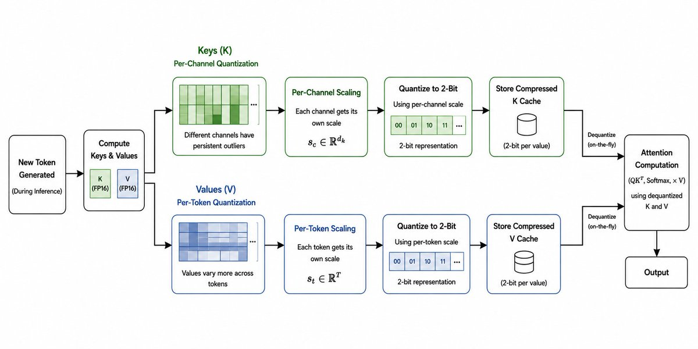
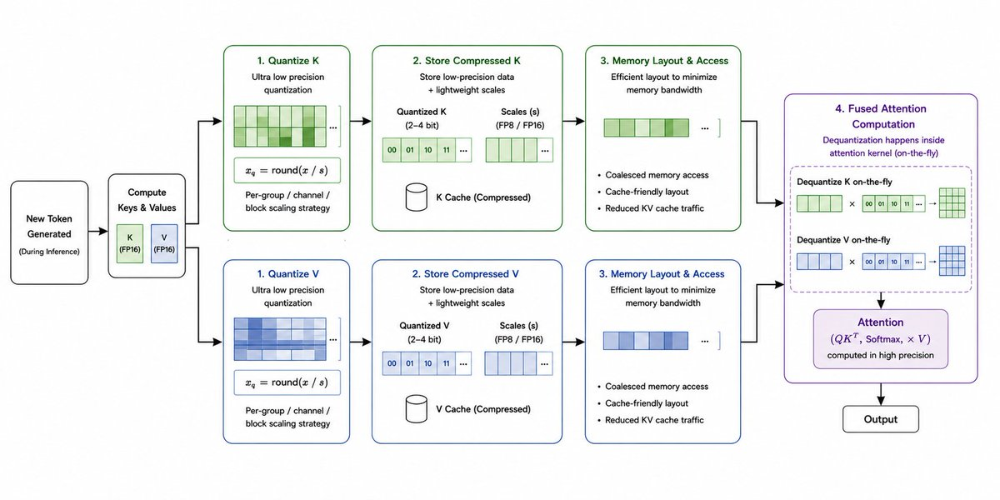

KV Cache Compression with TurboQuant and KIVI
I was reading and working on a project related to KV cache compression recently, and while going through different papers and implementations I thought it would be nice to make a small writeup on two really interesting approaches here, KIVI and TurboQuant. Both of them try to solve the same problem in different ways, which is reducing KV cache memory usage without hurting model quality or inference speed too much.
Every generated token adds new keys and values into memory, and at very large sequence lengths the KV cache can actually take more memory than the model weights themselves. On top of that, attention becomes heavily memory bandwidth bound because the GPU constantly has to read massive amounts of KV data during decoding. This is what pushed researchers toward KV cache compression and quantization.
KIVI: Asymmetric 2-bit Quantization
Talking about KIVI, which showed that you could compress the KV cache down to just 2 bits while keeping model quality almost unchanged. The important insight from KIVI was that keys and values behave very differently statistically. Keys tend to contain persistent outlier channels that stay important across many tokens, while values are much more dynamic and vary token by token. Because of this, KIVI used asymmetric quantization: keys were quantized per-channel while values were quantized per-token. Instead of forcing the same quantization strategy onto both tensors, it adapted to the actual structure of the data.
During inference, newly generated keys and values are first separated into different quantization paths. For keys, KIVI performs per-channel quantization because some channels consistently contain large magnitude outliers that are important for attention. Each channel gets its own scaling factor, and the key tensor is then compressed into 2-bit representations using those scales. Values are handled differently. Since values vary more dynamically across tokens instead of channels, KIVI applies per-token quantization where each token gets its own scale during compression.
During attention computation, the quantized KV cache stays compressed in memory and is only dequantized when required for the actual matrix multiplications. Mathematically, the quantization step is basically approximating the original tensor x as x_q = round(x / s), where s is the scaling factor chosen either per-channel or per-token depending on whether it is a key or value tensor. This lets KIVI drastically reduce memory usage and bandwidth while still preserving the attention information that matters most.

KIVI achieved around a 10x KV cache memory reduction compared to FP16 storage while keeping perplexity and downstream performance very close to the original model. More importantly, it proved that ultra low precision KV cache storage was actually practical. Before KIVI, most people assumed quantizing the KV cache that aggressively would destroy attention quality, especially for long context generation.
TurboQuant: Systems-Optimized Compression
After that, TurboQuant pushed the idea further by focusing not just on compression, but on end-to-end inference efficiency. A lot of earlier KV quantization methods reduced memory usage but introduced hidden costs during attention computation because they required expensive dequantization or awkward memory layouts. TurboQuant approached the problem more like a systems optimization problem instead of just a quantization problem.
Instead of treating the KV cache as FP16 tensors that later get compressed, TurboQuant redesigns how the KV cache is represented and accessed during attention itself. The main goal is to reduce memory bandwidth pressure during inference while still keeping the attention computation accurate. Since modern LLM inference is heavily memory bound, reducing KV cache traffic can significantly improve throughput and scalability, especially at very long context lengths.
TurboQuant uses ultra low precision KV representations along with efficient scaling and memory layout strategies that preserve the information attention depends on most. Unlike many earlier KV quantization methods, TurboQuant focuses on keeping the compressed cache usable directly inside the attention pipeline instead of constantly reconstructing large FP16 tensors. This avoids large dequantization overheads and reduces unnecessary memory movement across the GPU.
The actual TurboQuant pipeline works more like a systems optimization pipeline than a simple quantization layer. During inference, newly generated keys and values are quantized before being appended into the KV cache, and lightweight scaling metadata is stored alongside the compressed representations. Mathematically, the quantization step can still be approximated as x_q = round(x / s), where s represents the scaling factor for a group, channel, or block depending on the chosen layout strategy. During attention computation, the KV cache stays compressed for as long as possible, with fused dequantization happening directly inside the attention kernel itself.

Methods like KIVI and TurboQuant are becoming increasingly important and I wanted to share a quick blog on it on how we can aggressively compress the KV cache without hurting generation quality. These systems unlock longer contexts, larger batch sizes, lower inference costs, and much better GPU utilization.
Since I have a good amount of GPU available, I'll try my best to show a proper implementation of KV cache compression soon, maybe even benchmarking different approaches and seeing how close they actually get to FP16 quality and throughput in practice. I also saw a discussion where using NVFP4 instead of FP8 for KV cache storage reported surprisingly small accuracy drops while fitting around 1.78x more KV cache in memory. Haven't tested it myself yet, something I definitely want to experiment with and benchmark properly too. Stay tuned, thanks for reading.